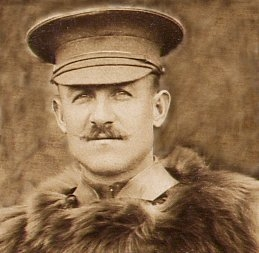
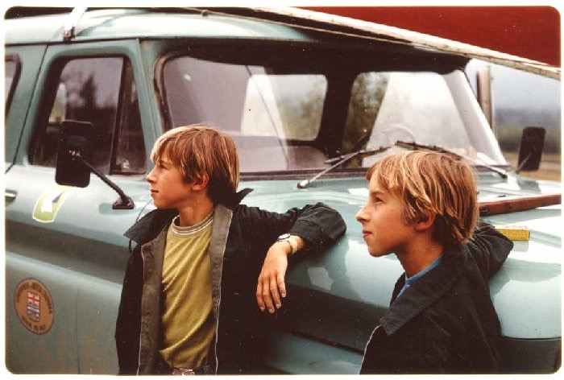
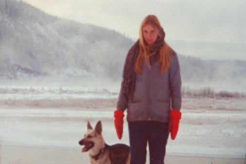
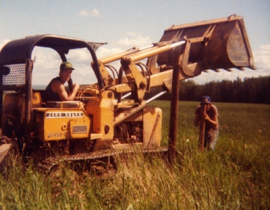

With my grandmother at her house in Calgary. She had First Nation ancestry.

My grandfather from my mother's side, Charles Rankin, is fishing at Boom Lake.
|  | This is my grandfather from my father's side. He left for battle just months before my dad was born. He was burried at Vimy Ridge. |
PEACE RIVER COUNTRY ADVENTURES
11 years old me with my brother in the Peace River Valley. This is West Bear Flat at the old gravel pit.
My beautiful sister. Her name is Patricia Carol and she is standing on the banks of the Peace River with her dog, named Sheba. This place was near Old Fort St. John.
|  | Fencing my Dad's land in Dawson Creek using a tracked loader with my older brother. The neighbor had a cat, a hoe and a truck. I played at making roads and building a dugout for our horses. |
After trying the rigs and then construction I finally got a job at 19 that I really liked. It was running skidder, log loader and buncher in the hill country in Alberta near Kakwa River. It was a camp job. I moved back to Dawson Creek to go to work for Reg Norman Trucking just before I turned 20. I ran cat and truck and we logged in the winters. He was a great guy to work for.